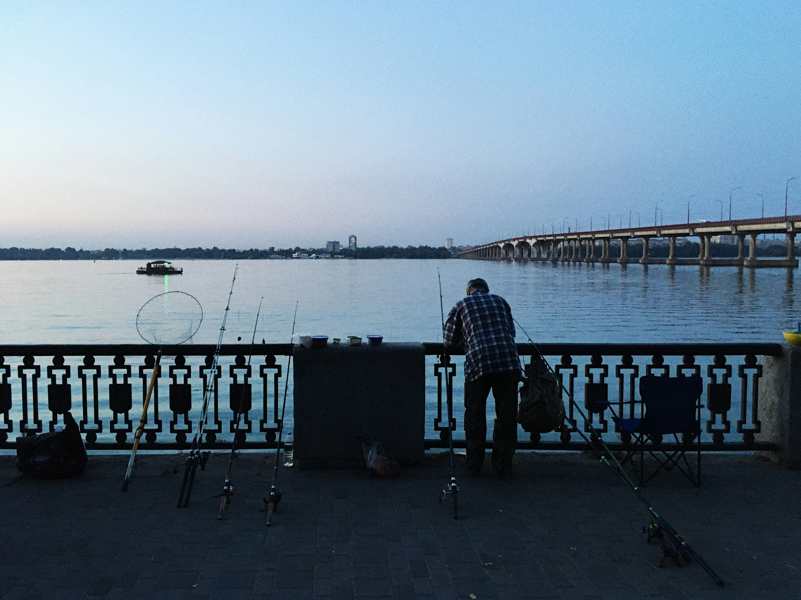
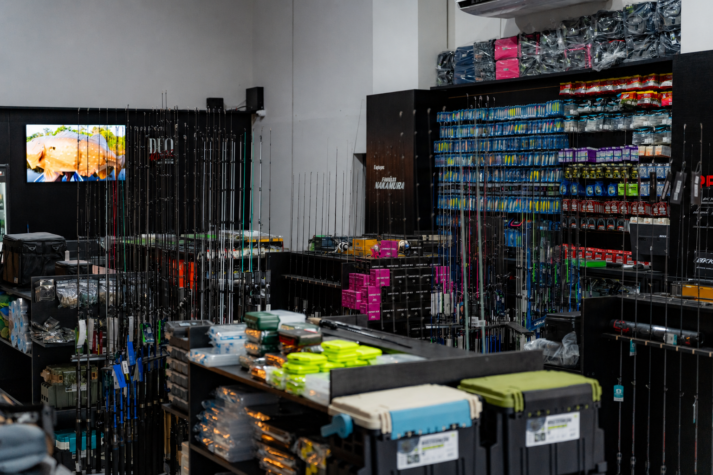
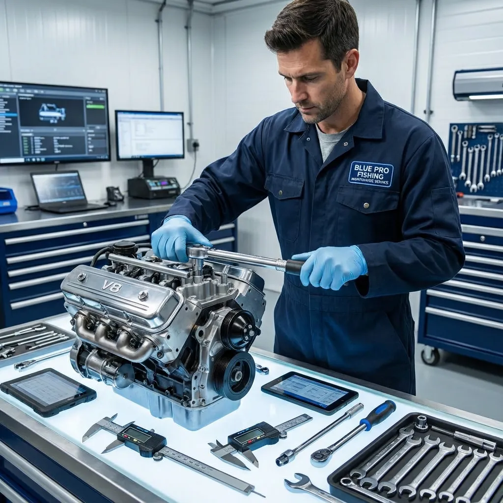
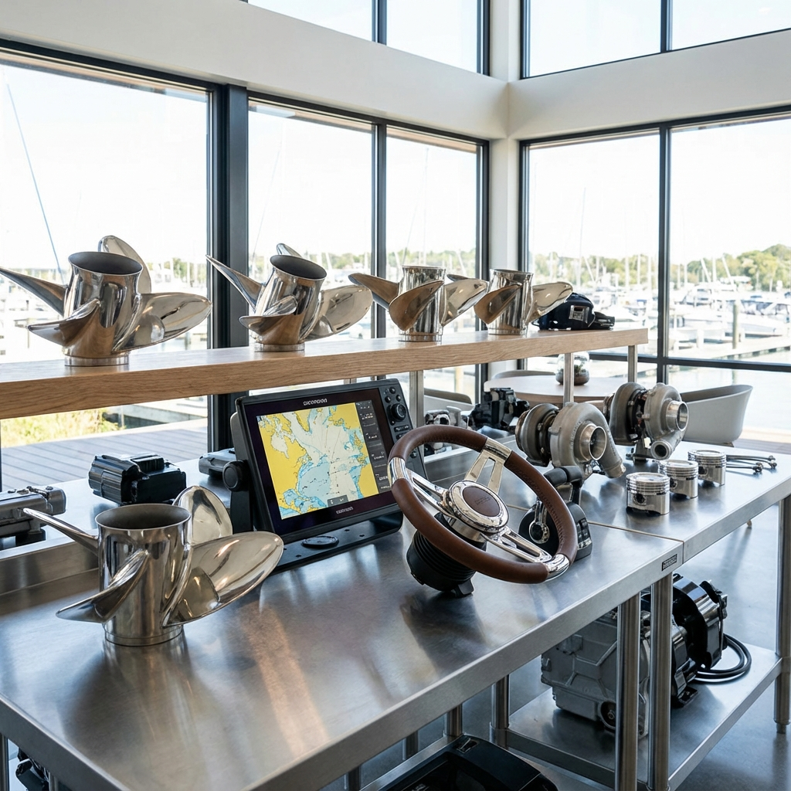
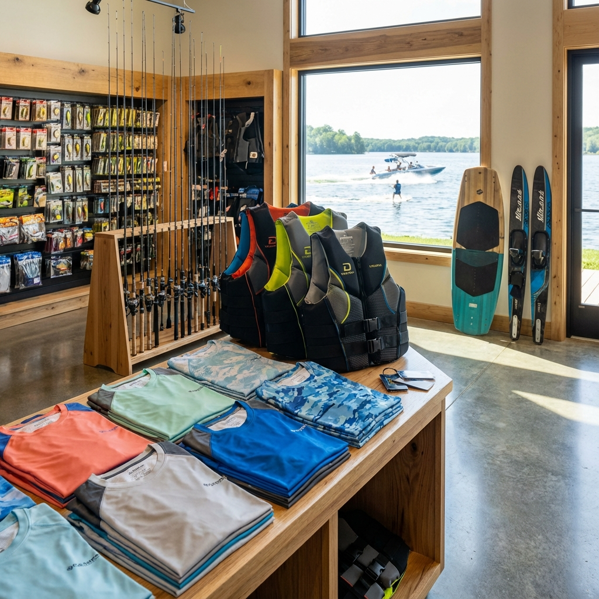

Blue Pro no YouTubeConteúdo real,
dicas práticas
e muita pesca.
dicas práticas
e muita pesca.
Sobre nósMais que uma loja,
Mais que uma loja,
uma paixão pela pesca e pelas águas.
A Blue Pro Fishing nasceu da necessidade de oferecer um serviço completo e especializado para os amantes da náutica e pesca esportiva. Não vendemos apenas produtos; entregamos soluções e experiências.
Desde a escolha do equipamento ideal, passando pela manutenção da sua embarcação, até o planejamento da sua próxima aventura de turismo, nossa equipe está pronta para atender com excelência.
Palmas - TOAtendimento local e especializado
EspecialistasSuporte técnico personalizado
QualidadeProdutos e serviços de confiança
ExperiênciasTurismo e pesca esportiva
10+Anos de experiência
9Marcas parceiras
O que fazemosSoluções completas para
Soluções completas para
pesca, náutica e aventura.

01Artigos de Pesca, Caça e Camping
Venda varejista completa. As melhores iscas, varas, barracas e equipamentos táticos das marcas líderes.
Saiba mais →02
Venda de Embarcações
Representação e venda de barcos e veículos recreativos. Encontre o barco ideal para sua pescaria.
Saiba mais →
03Manutenção Náutica
Oficina especializada em manutenção e reparação de embarcações, estruturas flutuantes e motores.
Saiba mais →04
Agência de Turismo
Operadora turística completa. Reservas, pacotes de pesca e experiências exclusivas nos melhores destinos.
Saiba mais →
05Peças e Acessórios
Amplo estoque de peças de reposição e acessórios para a customização e reparo da sua embarcação.
Saiba mais →
06Artigos Esportivos
Equipamentos e vestuário para esportes aquáticos e outdoor. Performance e segurança.
Saiba mais →ParceirosMarcas que acompanham
Marcas que acompanham
quem leva a pesca a sério.
Trabalhamos apenas com o melhor do mercado mundial.
Fale com a Blue ProPronto para sua
Pronto para sua
próxima experiência?
Interessado em artigos de pesca, manutenção de embarcações ou pacotes turísticos? Fale com nossos especialistas.
Telefone+55 (63) 99256-9790
E-mailcontato@blueprofishing.com.br
EndereçoQd. ACSU SE 20, Av. LO 03, S/N, Conj. 02, Lt. 18, Sala 02
Plano Diretor Sul • Palmas - TO
Plano Diretor Sul • Palmas - TO
Envie uma mensagemResponderemos pelo WhatsApp.